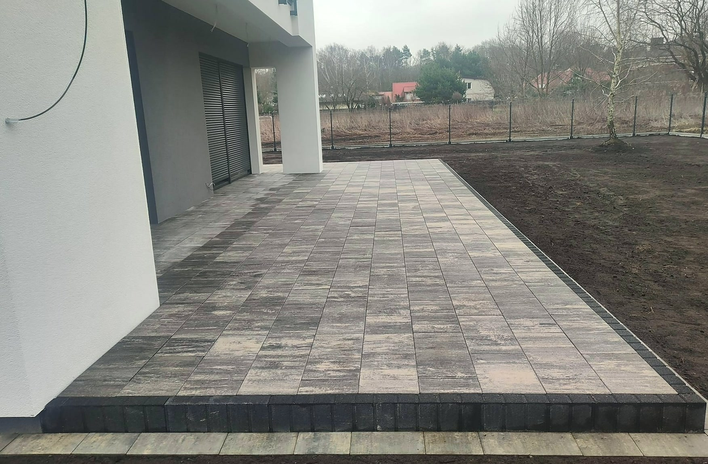

Zadzwoń albo napisz — umówimy pomiar i podamy konkretną kwotę za całość. Wycena jest bezpłatna.
Wpisz kilka zdań o tym, co ma być zrobione i gdzie. Odezwiemy się i umówimy pomiar — najczęściej jeszcze tego samego dnia.
Korytnica i okolice w promieniu około 70 km. Jeśli Twojej miejscowości nie ma na liście — zadzwoń, przy większej robocie zwykle da się dograć.
Zadzwoń albo napisz — przyjeżdżamy, mierzymy i podajemy konkretną kwotę za całość. Za darmo i bez zobowiązań. Decyzję podejmujesz po poznaniu ceny, nie przed.